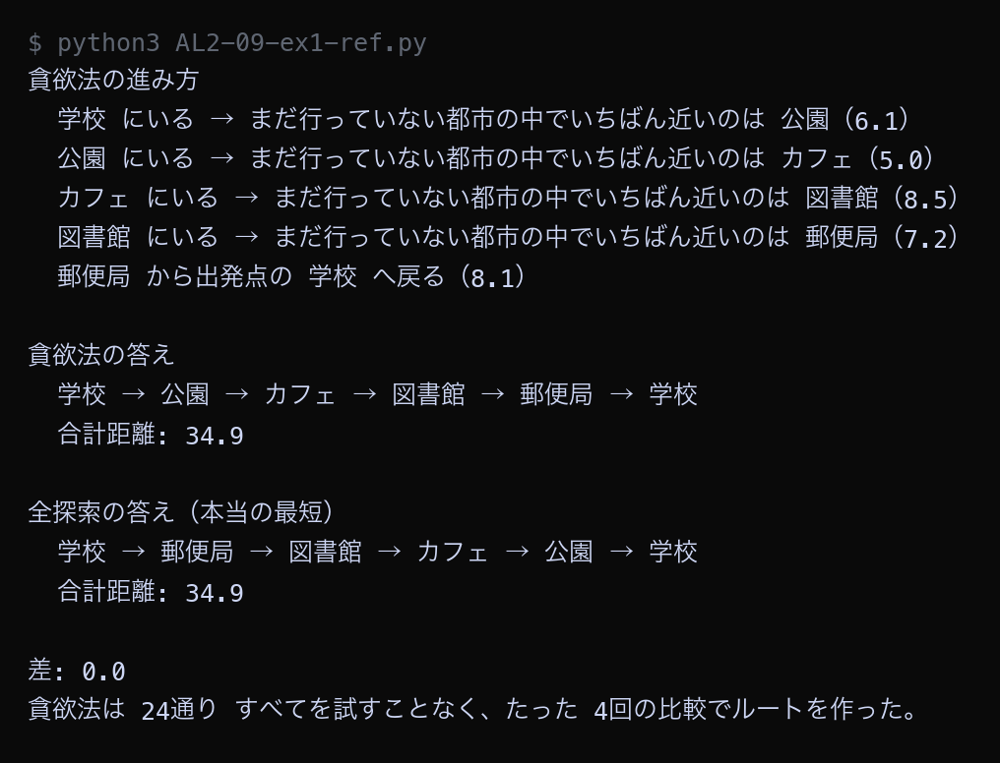
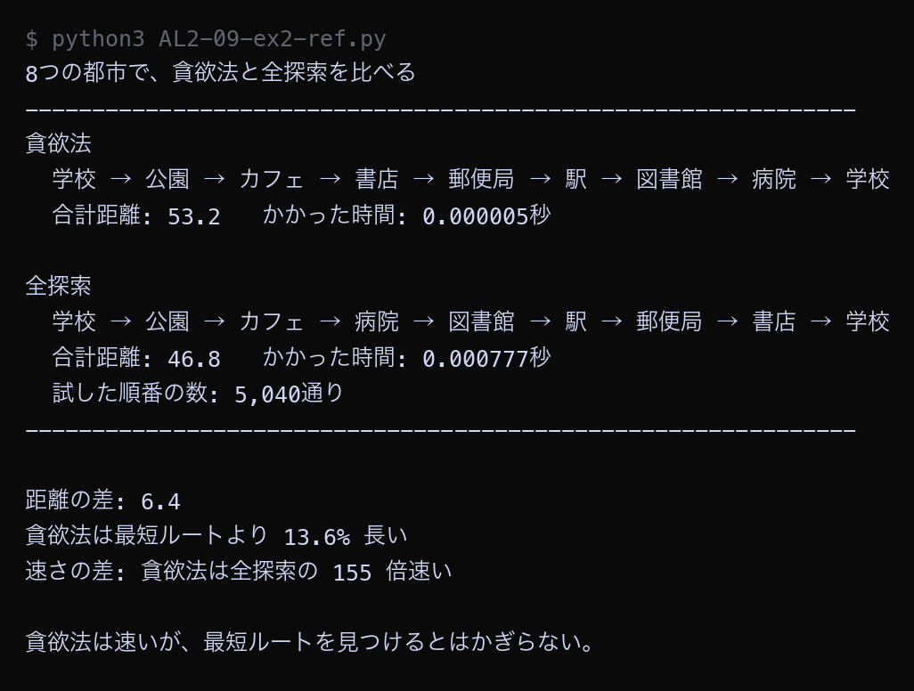

例題
例題1と例題2のコードを実行してください。まず作業フォルダを用意します。
VS Code でフォルダとファイルを用意する
Step 1: 作業フォルダを作る
- デスクトップに AL2 という名前のフォルダを作る（後期の授業ではずっと同じフォルダを使う）
- AL2 フォルダの中に No09 という名前のフォルダを作る
└── AL2/
├── No08/ ← 前回のファイル
└── No09/ ← 第9回はここに保存
Step 2: VS Code でフォルダを開く
- Visual Studio Code を起動する
- メニューから 「ファイル」→「フォルダーを開く」を選ぶ
- Step 1 で作った AL2/No09 フォルダを選んで開く
左側のエクスプローラーに No09 フォルダの中身が表示される（最初は空）。
Step 3: 例題ごとにファイルを作って実行する
- 左側エクスプローラーの No09 の横にある 新しいファイルアイコンをクリック
- ファイル名を入力して Enter（例題1なら
AL2-09-ex1.py） - 例題のコードブロック右上の コピーボタンをクリック
- VS Code の編集画面に 貼り付ける（Ctrl+V / Cmd+V）
- 保存する（Ctrl+S / Cmd+S）
- 右上の ▷（再生ボタン）をクリックして実行する
今回作るファイル（実践）: AL2-09-ex1.py, AL2-09-ex2.py。参考のコードを保存するときは、名前の最後に -ref を付ける
- 参考: コメントなしの完成したコード。まず読んで、全体の流れをつかむ
- 実践: アルゴリズムの要になる行が
____（穴）になっている。 丁寧なコメントと、コードの下の「ヒント」「候補」を見て、自分で埋めてから実行する
ファイル名は、参考が AL2-09-ex1-ref.py（ref = reference、参考）、
実践が AL2-09-ex1.py のように分けます（同じ名前にすると上書きされてしまうため）。
課題で使うのは実践のファイルです。
実行結果がページの画像と同じになれば正解です。ちがえば、どの穴がちがうかを考えて直します。
どうしても分からないときだけ、参考のコードと見比べてください。
今回のキーワード
| 用語 | 説明 |
|---|---|
| 貪欲法 | 先のことを考えず、その時点でいちばん良さそうな選択をくり返す方法。速いが最適とはかぎらない。 |
| 最近傍法 | 巡回セールスマン問題に貪欲法を使ったもの。いまいる都市からいちばん近い都市へ進む。 |
| 局所最適 | 部分的にはいちばん良いが、全体で見るといちばん良いとはかぎらない状態。 |
| 近似解 | 最適解ではないが、実用上じゅうぶん良い答え。速く求められることが利点。 |
| 最適解 | 考えられる中で本当にいちばん良い答え。全探索や動的計画法で求まる。 |
貪欲法で5都市を解く
第8回と同じ5つの都市に、貪欲法を使います。 「いまいる都市から、まだ行っていない都市のうちいちばん近いところへ進む」をくり返すだけです。 全探索の答えと比べます。
例題1（参考）── 完成したコード。コメントなしで全体の流れをつかむ。保存するなら AL2-09-ex1-ref.py の名前で
Python ── AL2-09-ex1-ref.py import math from itertools import permutations cities = [ ("学校", 2, 2), ("郵便局", 10, 3), ("図書館", 14, 9), ("カフェ", 6, 12), ("公園", 3, 8), ] n = len(cities) distance = [] for i in range(n): row = [] for j in range(n): d = math.sqrt((cities[i][1] - cities[j][1]) ** 2 + (cities[i][2] - cities[j][2]) ** 2) row.append(round(d, 1)) distance.append(row) def greedy(start): """いちばん近い都市へ進むことをくり返して、ルートを作る""" visited = [start] total = 0.0 here = start print("貪欲法の進み方") while len(visited) < n: nearest = None for j in range(n): if j in visited: continue if nearest is None or distance[here][j] < distance[here][nearest]: nearest = j print(f" {cities[here][0]} にいる → まだ行っていない都市の中で" f"いちばん近いのは {cities[nearest][0]}（{distance[here][nearest]}）") total = total + distance[here][nearest] visited.append(nearest) here = nearest total = total + distance[here][start] print(f" {cities[here][0]} から出発点の {cities[start][0]} へ戻る（{distance[here][start]}）") return visited, round(total, 1) def brute_force(): """全探索で最短ルートを求める（答え合わせ用）""" best_length = None best_order = None for order in permutations(range(1, n)): total = 0.0 here = 0 for city in order: total = total + distance[here][city] here = city total = total + distance[here][0] if best_length is None or total < best_length: best_length = total best_order = order return [0] + list(best_order), round(best_length, 1) def route_names(route): """ルートを都市名でつないだ文字列にして返す""" names = [cities[i][0] for i in route] names.append(cities[route[0]][0]) return " → ".join(names) greedy_route, greedy_length = greedy(0) print() print("貪欲法の答え") print(" ", route_names(greedy_route)) print(" 合計距離:", greedy_length) print() best_route, best_length = brute_force() print("全探索の答え（本当の最短）") print(" ", route_names(best_route)) print(" 合計距離:", best_length) print() print("差:", round(greedy_length - best_length, 1)) print("貪欲法は 24通り すべてを試すことなく、たった 4回の比較でルートを作った。")
▶ 実行結果

貪欲法は「学校 → 公園 → カフェ → 図書館 → 郵便局 → 学校」というルートを作り、合計は34.9でした。全探索で求めた最短も34.9なので、差は0です。ただし2つのルートをよく見ると、回る向きが逆になっているだけで、通る道はまったく同じです。貪欲法は24通りを試さず、たった4回の比較でルートを作っています。都市が5個と少ないため、たまたま最短に当たったという点に注意してください。
例題1（実践）── 参考と同じ方法を別のデータで。要の行が ____ になっているので、コメントを読みながら埋めて、AL2-09-ex1.py の名前で保存して実行する
Python ── AL2-09-ex1.py # 貪欲法で巡回セールスマン問題を解く # 作戦はとても単純: 「いまいる都市から、まだ行っていない都市のうち # いちばん近いところへ進む」をくり返すだけ。 import math from itertools import permutations cities = [ ("学校", 4, 3), ("郵便局", 11, 2), ("図書館", 15, 8), ("カフェ", 8, 13), ("公園", 2, 10), ] n = len(cities) distance = [] for i in range(n): row = [] for j in range(n): d = math.sqrt((cities[i][1] - cities[j][1]) ** 2 + (cities[i][2] - cities[j][2]) ** 2) row.append(round(d, 1)) distance.append(row) def greedy(start): """いちばん近い都市へ進むことをくり返して、ルートを作る""" visited = [start] total = 0.0 here = start print("貪欲法の進み方") while len(visited) < n: # まだ行っていない都市の中で、いちばん近いものをさがす nearest = None for j in range(n): if j in visited: continue if nearest is None or ____: # ← 穴1 nearest = j print(f" {cities[here][0]} にいる → まだ行っていない都市の中で" f"いちばん近いのは {cities[nearest][0]}（{distance[here][nearest]}）") total = total + distance[here][nearest] visited.append(nearest) here = nearest total = total + ____ # ← 穴2 print(f" {cities[here][0]} から出発点の {cities[start][0]} へ戻る（{distance[here][start]}）") return visited, round(total, 1) def brute_force(): """全探索で最短ルートを求める（答え合わせ用）""" best_length = None best_order = None for order in permutations(range(1, n)): total = 0.0 here = 0 for city in order: total = total + distance[here][city] here = city total = total + distance[here][0] if ____: # ← 穴3 best_length = total best_order = order return [0] + list(best_order), round(best_length, 1) def route_names(route): """ルートを都市名でつないだ文字列にして返す""" names = [cities[i][0] for i in route] names.append(cities[route[0]][0]) return " → ".join(names) greedy_route, greedy_length = greedy(0) print() print("貪欲法の答え") print(" ", route_names(greedy_route)) print(" 合計距離:", greedy_length) print() best_route, best_length = brute_force() print("全探索の答え（本当の最短）") print(" ", route_names(best_route)) print(" 合計距離:", best_length) print() print("差:", round(greedy_length - best_length, 1)) print("貪欲法は 24通り すべてを試すことなく、たった 4回の比較でルートを作った。")
穴埋め（____ を埋めてから実行する）
| 穴 | ヒント | 候補（1つが正解） |
|---|---|---|
| 穴1 | いまいる場所から、まだ行っていない都市のうちいちばん近いものを選ぶ | A. j < nearestB. distance[here][j] < distance[here][nearest]C. distance[here][j] > distance[here][nearest] |
| 穴2 | 最後の都市から出発点へ戻る距離を足す | A. distance[start][start]B. 0C. distance[here][start] |
| 穴3 | 全探索: 最初の1つ目か、これまでより短いときに更新する | A. best_length is None or total < best_lengthB. total > best_lengthC. total < best_length |
埋めたら保存して実行し、下の実行結果と同じになるか見比べる。ちがえば、どの穴がちがうかを考えて直す（上の「参考」のコードと見比べてもよい）。 答えは次回の授業の時刻に、ページのいちばん下の「解答例」に出ます。
▶ 実行結果

埋めて実行した結果が、この画像と同じになれば正解です。ちがうときは、どの穴がちがうかを考えて直してください。
8都市で全探索と比べる
都市を8個に増やして、同じ比較をします。都市が増えると結果はどう変わるでしょうか。
例題2（参考）── 完成したコード。コメントなしで全体の流れをつかむ。保存するなら AL2-09-ex2-ref.py の名前で
Python ── AL2-09-ex2-ref.py import math import time from itertools import permutations cities = [ ("学校", 2, 2), ("郵便局", 10, 3), ("図書館", 14, 9), ("カフェ", 6, 12), ("公園", 3, 8), ("駅", 17, 4), ("病院", 12, 13), ("書店", 8, 7), ] n = len(cities) distance = [] for i in range(n): row = [] for j in range(n): d = math.sqrt((cities[i][1] - cities[j][1]) ** 2 + (cities[i][2] - cities[j][2]) ** 2) row.append(d) distance.append(row) def greedy(start): """貪欲法: いまいる場所からいちばん近いところへ進むことをくり返す""" visited = [start] total = 0.0 here = start while len(visited) < n: nearest = None for j in range(n): if j in visited: continue if nearest is None or distance[here][j] < distance[here][nearest]: nearest = j total = total + distance[here][nearest] visited.append(nearest) here = nearest total = total + distance[here][start] return visited, total def brute_force(): """全探索: すべての順番を試して、いちばん短いものを返す""" best_length = None best_order = None tried = 0 for order in permutations(range(1, n)): total = 0.0 here = 0 for city in order: total = total + distance[here][city] here = city total = total + distance[here][0] tried = tried + 1 if best_length is None or total < best_length: best_length = total best_order = order return [0] + list(best_order), best_length, tried def route_names(route): """ルートを都市名でつないだ文字列にして返す""" names = [cities[i][0] for i in route] names.append(cities[route[0]][0]) return " → ".join(names) began = time.time() greedy_route, greedy_length = greedy(0) greedy_time = time.time() - began began = time.time() best_route, best_length, tried = brute_force() brute_time = time.time() - began print("8つの都市で、貪欲法と全探索を比べる") print("-" * 62) print("貪欲法") print(" ", route_names(greedy_route)) print(f" 合計距離: {round(greedy_length, 1)} かかった時間: {greedy_time:.6f}秒") print() print("全探索") print(" ", route_names(best_route)) print(f" 合計距離: {round(best_length, 1)} かかった時間: {brute_time:.6f}秒") print(f" 試した順番の数: {tried:,}通り") print("-" * 62) print() difference = greedy_length - best_length ratio = greedy_length / best_length print(f"距離の差: {round(difference, 1)}") print(f"貪欲法は最短ルートより {round((ratio - 1) * 100, 1)}% 長い") print(f"速さの差: 貪欲法は全探索の {round(brute_time / greedy_time)} 倍速い") print() print("貪欲法は速いが、最短ルートを見つけるとはかぎらない。")
▶ 実行結果

貪欲法は53.2、全探索は46.8で、差は6.4でした。貪欲法のルートは最短ルートより13.6%長いという結果です。一方で速さは、貪欲法が全探索の約150倍でした。都市が5個のときは同じ答えでしたが、8個になると差が出ています。都市が増えるほど、貪欲法が最短に当たる可能性は下がっていきます。
例題2（実践）── 参考と同じ方法を別のデータで。要の行が ____ になっているので、コメントを読みながら埋めて、AL2-09-ex2.py の名前で保存して実行する
Python ── AL2-09-ex2.py # 都市を8個に増やして、貪欲法と全探索を比べる import math import time from itertools import permutations cities = [ ("学校", 4, 3), ("郵便局", 11, 2), ("図書館", 15, 8), ("カフェ", 8, 13), ("公園", 2, 10), ("駅", 18, 5), ("病院", 13, 14), ("書店", 9, 6), ] n = len(cities) distance = [] for i in range(n): row = [] for j in range(n): d = math.sqrt((cities[i][1] - cities[j][1]) ** 2 + (cities[i][2] - cities[j][2]) ** 2) row.append(d) distance.append(row) def greedy(start): """貪欲法: いまいる場所からいちばん近いところへ進むことをくり返す""" visited = [start] total = 0.0 here = start while len(visited) < n: nearest = None for j in range(n): if ____: # ← 穴1 continue if nearest is None or ____: # ← 穴2 nearest = j total = total + distance[here][nearest] visited.append(nearest) here = nearest total = total + distance[here][start] return visited, total def brute_force(): """全探索: すべての順番を試して、いちばん短いものを返す""" best_length = None best_order = None tried = 0 for order in permutations(range(1, n)): total = 0.0 here = 0 for city in order: total = total + distance[here][city] here = city total = total + distance[here][0] tried = tried + 1 if best_length is None or total < best_length: best_length = total best_order = order return [0] + list(best_order), best_length, tried def route_names(route): """ルートを都市名でつないだ文字列にして返す""" names = [cities[i][0] for i in route] names.append(cities[route[0]][0]) return " → ".join(names) began = time.time() greedy_route, greedy_length = greedy(0) greedy_time = time.time() - began began = time.time() best_route, best_length, tried = brute_force() brute_time = time.time() - began print("8つの都市で、貪欲法と全探索を比べる") print("-" * 62) print("貪欲法") print(" ", route_names(greedy_route)) print(f" 合計距離: {round(greedy_length, 1)} かかった時間: {greedy_time:.6f}秒") print() print("全探索") print(" ", route_names(best_route)) print(f" 合計距離: {round(best_length, 1)} かかった時間: {brute_time:.6f}秒") print(f" 試した順番の数: {tried:,}通り") print("-" * 62) print() difference = greedy_length - best_length ratio = ____ # ← 穴3 print(f"距離の差: {round(difference, 1)}") print(f"貪欲法は最短ルートより {round((ratio - 1) * 100, 1)}% 長い") print(f"速さの差: 貪欲法は全探索の {round(brute_time / greedy_time)} 倍速い") print() print("貪欲法は速いが、最短ルートを見つけるとはかぎらない。")
穴埋め（____ を埋めてから実行する）
| 穴 | ヒント | 候補（1つが正解） |
|---|---|---|
| 穴1 | すでに行った都市は候補にしない | A. j == hereB. j in visitedC. j not in visited |
| 穴2 | いまいる場所から、まだ行っていない都市のうちいちばん近いものを選ぶ | A. distance[here][j] < distance[here][nearest]B. distance[here][j] > distance[here][nearest]C. distance[j][j] < distance[nearest][nearest] |
| 穴3 | 貪欲法の答えが、最適解の何倍か | A. best_length / greedy_lengthB. greedy_length / best_lengthC. greedy_length - best_length |
埋めたら保存して実行し、下の実行結果と同じになるか見比べる。ちがえば、どの穴がちがうかを考えて直す（上の「参考」のコードと見比べてもよい）。 答えは次回の授業の時刻に、ページのいちばん下の「解答例」に出ます。
▶ 実行結果

埋めて実行した結果が、この画像と同じになれば正解です。ちがうときは、どの穴がちがうかを考えて直してください。